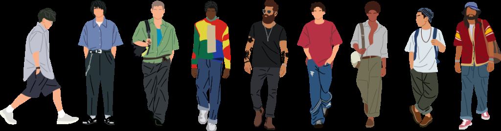

Mon armoire est pleine, mais je perds encore du temps à chercher des idées sur Internet. Je veux rejoindre la bêta pour économiser, gagner du temps et apprendre à mieux utiliser les tenues que je possède déjà.
Rejoins les premiers qui suivent déjà le mouvement — places limitées
Accès en avant-première
Sois parmi les premiers à tester.
Les premiers testeurs façonnent l'outil avec nous. Tu reçois un accès gratuit, et en échange, tu nous dis ce qui marche, ce qui manque, ce qui te ressemble.
Pas de spam. Juste une réponse quand le test ouvre.
Tes photos restent privées
Données hébergées en France
Désinscription en un clic
Merci, ta demande est partie ! ✦
On revient vers toi à l'ouverture de la bêta — d'ici là, garde un œil sur ta boîte mail (vérifie aussi tes spams, parfois on s'y cache).
La promesse en mouvement
Ton matin plus simple.
Sans pub, sans stress.
Ce que tu reçois
Pas juste un accès. Une place dans l'aventure.
01 — Accès gratuit
Toute la bêta, sans limite. Avant tout le monde, sans pub, sans abonnement.
02 — Ton avis compte
Ce que tu nous dis façonne l'outil. Les premières fonctionnalités, c'est toi qui les choisis.
03 — Une tribu fondatrice
Tu fais partie des premiers visages de Styleme.fr. Une communauté discrète, exigeante, bienveillante.
Premiers retours bêta
Ce que les personnes inscrites pour la version bêta en disent.
Je veux acheter moins et participer moins à la fast fashion. J'aimerais que la bêta aide aussi à redécouvrir les marques françaises, le troc local et les boutiques qui font vivre nos centres-villes.
Voir des images de vêtements qui polluent la planète, ça m'a vraiment marquée. Je n'ai pas envie d'un futur envahi par le plastique et les habits jetés. Je veux rejoindre un mouvement qui va dans l'autre sens.
